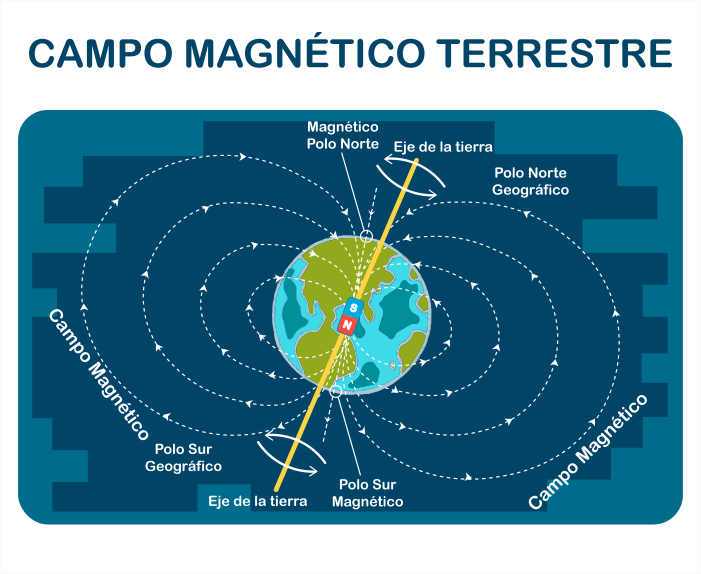

Podemos decir que el núcleo de la Tierra es un imán gigante ya que está formado por metales entre los que se encuentra el hierro y níquel líquido, materiales que tiene propiedades magnéticas y generan corrientes eléctricas que contribuyen a la formación de un campo magnético que rodea a la Tierra, así las líneas de corriente de este campo magnético viajan desde el polo norte hacia el polo sur.
El campo magnético es fundamental para la vida en la Tierra ya que nos protege de la radiación dañina que viene del espacio y de los vientos que provienen del Sol, precisamente la interacción entre el campo magnético y los vientos solares dan origen a las auroras boreales. Además, la mayoría de los animales pueden navegar en el planeta guiándose por el campo magnético.